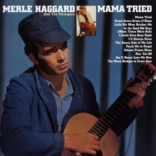

Like an eagle, I’m a prisoner of the wind#
July 1st, 2024
tl;dr: For millennia, the imagery of being bound to the wind has been used to convey the seeming freedom—but ultimate folly—of being completely unbeholden to others.
Avian shackles in contemporary music#
The last track of Merle Haggard’s 1968 classic Mama Tried is the beautiful “Too Many Bridges to Cross Over†written by Dallas Frazier. Here’s the official recording. Here are the lyrics:
[Verse 1]
Be close to me, but please don’t ever love me
Don’t let your feelings carry you that far
I’ll hold you in my arms
Buy you clothes and pretty charms
And I’ll give you everything except my love[Chorus]
Because there’s too many bridges to cross over
Too many places I ain’t been
Yeah there’s too many fields of tempting clover
Like an eagle, I’m a prisoner of the wind[Verse 2]
Well ‘traveling’ was the nickname of my papa
And Mama said he died ‘cause he slowed down
Keep in mind these things I’m saying
‘Cause I ain’t got the time to staying
Won’t be long until my shoes touch distant ground[Chorus]
Because there’s too many bridges to cross over
Too many places I ain’t been
Yeah there’s too many fields of tempting clover
Like an eagle, I’m a prisoner of the wind—“Too Many Bridges to Cross Over”, performed by Merle Haggard, written by Dallas Frazier
This is a gem of what I’ll call the “rambler’s lament†genre (one of very many Merle recorded) — wherein a good-timing, free-flying person (usually male) knows the pain that his rambling lifestyle causes, feels terrible about it, but sees it as inextricably part of who he is and just can’t help it. Think also Eric Clapton’s “Lonely Stranger†(lyrics), Jackson Browne’s “Love Needs A Heart†(lyrics), or Kanye West’s “Welcome to Heartbreak†(lyrics).
The last line of the repeated chorus, “Like an eagle, I’m a prisoner of the wind,†is so beautiful, and it reminded me of the very last line by Bob Dylan’s “Ballad in Plain D†(lyrics), itself something of a rambler’s lament:
The wind knocks my window, the room it is wet
The words to say I’m sorry, I haven’t found yet
I think of her often and hope whoever she’s met
Will be fully aware of how precious she isAh, my friends from the prison, they ask unto me
“How good, how good does it feel to be free?”
And I answer them most mysteriously
“Are birds free from the chains of the skyway?â€â€”from “Ballad in Plain D†by Bob Dylan
I can’t find much information about the origins of “Too Many Bridges to Cross Over”, but the songwriting copyright is from 1968, while Dylan recorded “Ballad in Plain D†in June 1964. I would love to know if Dallas Frazier was cribbing from Dylan on his line. (My wife rightly notes that, as happens in science, it’s possible that two people came to the same idea independently around the same time.)
And either way, how did Dylan come to it? From the song’s wikipedia page, he was clearly (if perhaps subconsiously) influenced by an English folk tradition regarding the overall structure and melody. But what about that final line, the one that for me makes the entire song? If anybody reading this knows more about it, I’d love to hear it!
I was also reminded of this motif by Big Thief’s “Sparrow”, which is a retelling of the story of Adam and Eve and the Fall of Man (which, it occurs to me, you could claim is a kind of rambler’s lament, where the ramblers are Adam and Eve and, by extension, all of humanity):
Stuck to the wind like Velcro
Distantly hearing the bell toll—from “Sparrow†by Big Thief
Though no birds explicitly appear, Roxy Music’s great “More Than This†does something similar:
Fallen leaves in the night
Who can say where they’re blowing?
As free as the wind
Hopefully learning
Why the sea on the tide
Has no way of turning—from “More Than This†by Roxy Music
Especially in the context of the rest of the album, which would prove to be Roxy Music’s last after a ferocious 10-year run, “as free as the wind†isn’t a happy expression of limitless possibilities; it is a melancholy expression of indifference. (As Ferry puts it on the title track, “Now the party’s over…I’m so tired.”)
And bonus points for bringing in the ocean in the next three lines, in which to my ears “Hopefully learning†is Brian Ferry’s sardonic way of really saying “Never going to learn.”
In wisdom traditions#
This notion of the folly of being totally unbound by commitments—and using the atmosphere and ocean to depict that folly–has ancient roots.
For example, from the Hebrew Bible, in Hosea (emphasis mine):
When their swilling is over,
they go on to whore.
They love the disgrace of their defenders.
The wind bundles them in its wings,
and their alters are shamed.—Hosea 4:18-19
This is from the translation by Robert Alter, who’s note on the line is also relevant: “[T]he notion here of being bundled in the wings of the wind evokes the helpless passivity of the practitioners of vice carried away to their destruction.”
A similar sentiment and imagery arises in the Book of James of the New Testament (emphasis mine):
My brothers and sisters, whenever you face trials of any kind, consider it nothing but joy, because you know that the testing of your faith produces endurance; and let endurance have its full effect, so that you may be mature and complete, lacking in nothing.
If any of you is lacking in wisdom, ask God, who gives to all generously and ungrudgingly, and it will be given you. But ask in faith, never doubting, for the one who doubts is like a wave of the sea, driven and tossed by the wind; for the doubter, being double-minded and unstable in every way, must not expect to receive anything from the Lord.
—James 1:2-8
Likewise in ancient philosophy, though alas without any wind/birds/chains imagery (emphasis mine):
But when in democracy everyone claims the freedom and the right to make and break laws, what soon follows, said Plato, is anarchy, for such freedom is not freedom but merely licence.
—A. C. Grayling, from A History of Philosophy
Fast-forward a few thousand years, David Foster Wallace touches on this in his deservedly lauded 2005 commencement speech, This Is Water (emphasis mine):
Our own present culture has harnessed these forces in ways that have yielded extraordinary wealth and comfort and personal freedom. The freedom all to be lords of our tiny skull-sized kingdoms, alone at the center of all creation. This kind of freedom has much to recommend it. But of course there are all different kinds of freedom, and the kind that is most precious you will not hear talked about much in the great outside world of wanting and achieving. The really important kind of freedom involves attention and awareness and discipline, and being able truly to care about other people and to sacrifice for them over and over in myriad petty, unsexy ways every day.
That is real freedom. That is being educated, and understanding how to think. The alternative is unconsciousness, the default setting, the rat race, the constant gnawing sense of having had, and lost, some infinite thing.
—from This Is Water by David Foster Wallace
In atmospheric and oceanic fluid dynamics#
It’s interesting to me that the large-scale flows in our atmosphere (and ocean) are, because of the influence of the planet’s rotation and gravitational pull, themselves highly constrained in the ways they can flow: it’s hard to go up, fighting against gravity, and its hard to go in a straight line, because the planet’s rotation turns fluid parcels to the side. In that sense, the bird’s skyway itself is chained by the physical laws governing fluid flows in a rapidly rotating, thin-shell atmosphere.
What, in turn, are the physical laws “chained†to? Perhaps, as Sturgill Simpson reminds us, it’s turtles all the way down the line.